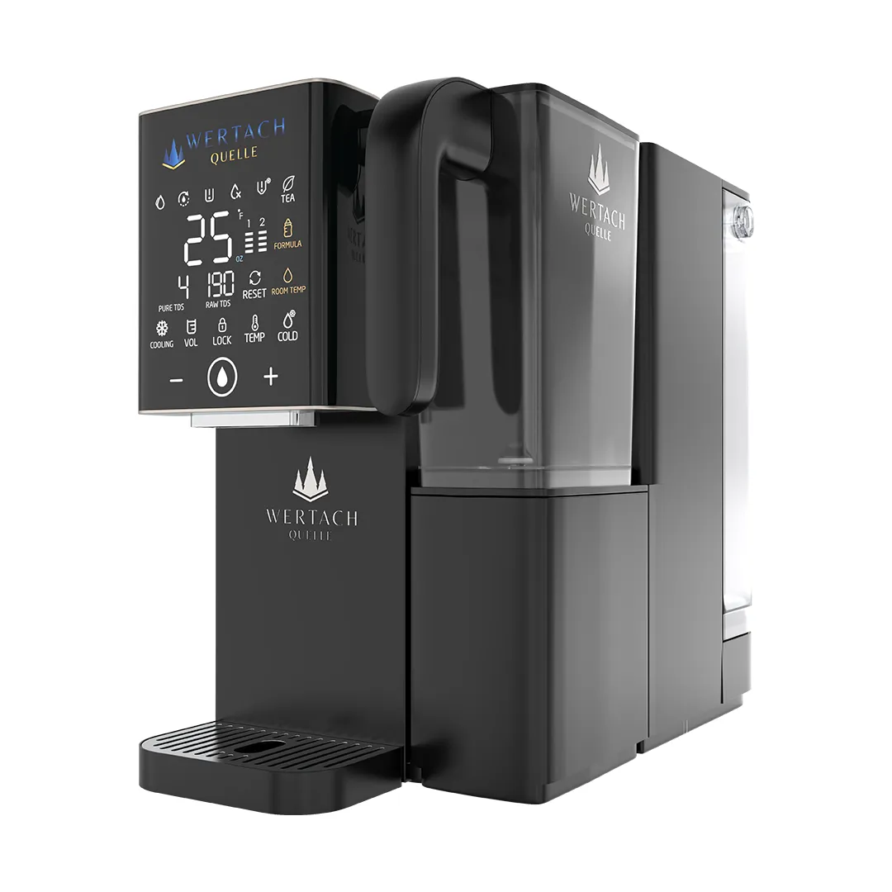
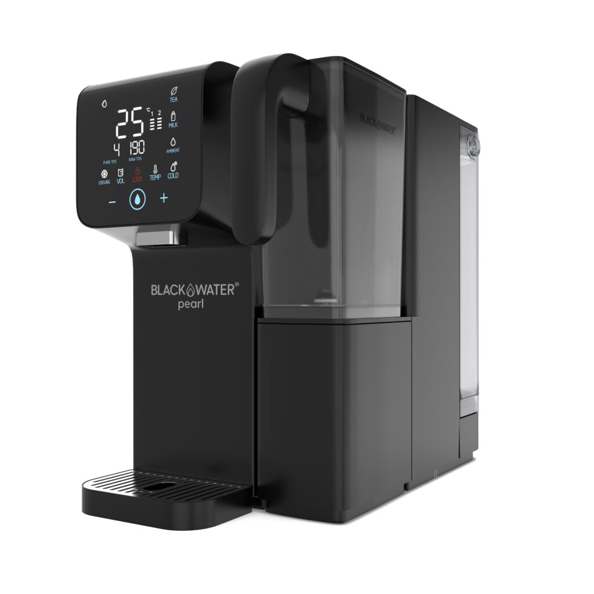
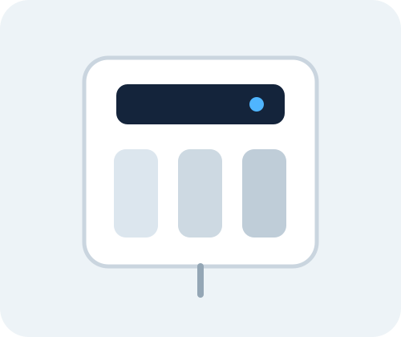
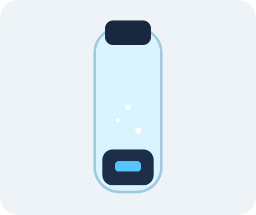

Water filtration products
Browse household water systems and appliances. Use filters or add up to three models to comparison.
10 Modelle
Demo-Produkte werden angezeigt

WERTACH
Biella
ab €1.994
0,34 L/min · Countertop ROHeiß/Kalt · Remineralisierung · TDSBasic €1.994 · Performance €2.074 · Medical €2.474

BLACKWATER
Pearl
€1.497
0,34 L/min · Countertop ROHeiß/Kalt · Remineralisierung · UV100 GPD Filmtec® · TDS-Anzeige

Aquaphor
DWM-202S Pro
€699
15 L/h · Compact ROMineralization · Integrated pumpEstimated €0.10 per liter
Bluewater
Spirit 300
€1,290
25 L/h · High recovery ROOptional remineralizationCertified PFAS reduction

WALUTEC
H2 Bottle Pro
€199
260 ml · PEM/SPE1500–3000 PPB · USB-C5/10 minute programs
WERTACH
Biella
ab €1.994
0,34 L/min · Countertop ROHeiß/Kalt · Remineralisierung · TDSBasic €1.994 · Performance €2.074 · Medical €2.474
BLACKWATER
Pearl
€1.497
0,34 L/min · Countertop ROHeiß/Kalt · Remineralisierung · UV100 GPD Filmtec® · TDS-Anzeige
Aquaphor
DWM-202S Pro
€699
15 L/h · Compact ROMineralization · Integrated pumpEstimated €0.10 per liter
Bluewater
Spirit 300
€1,290
25 L/h · High recovery ROOptional remineralizationCertified PFAS reduction